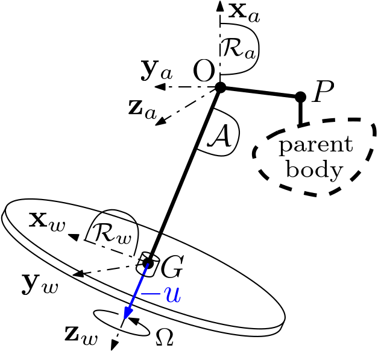
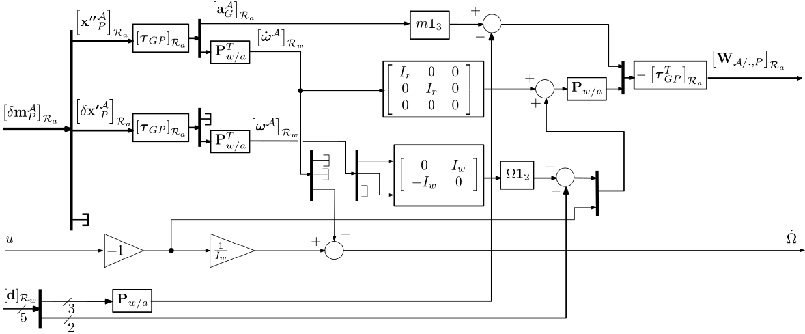
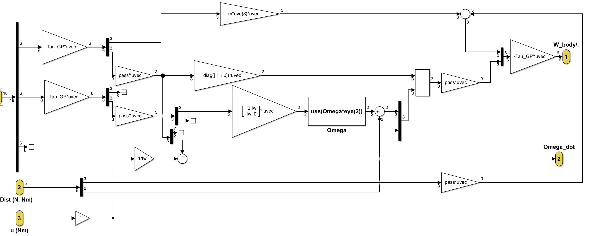

Reaction wheel linear model (with disturbances)
Linear model (7x24) of an actuated and disturbed reaction wheel
It computes the $(7 \times 24)$ linear dynamic model of a wheel $\mathcal{A}$ spining around a given axis $\mathbf z_w$, at a given angular rate $\Omega$ and actuated by a torque $-u\,(Nm)$ ($u$ is the torque applied on the parent body) and submitted to internal disturbances: i.e. the transfer from
- the motion vector $\delta\mathbf{m}^{\mathcal A}_P $ at the connection point $P$ of the wheel $\mathcal{A}$ with the parent body,
- the $5$ components ($3$ forces and $2$ radial torques) of the internal disturbances $\mathbf d$,
- the control signal $u$
- the wrench $\mathbf{W}_{\mathcal{A/.},P}$ applied by $\mathcal{A}$ to the parent body,
- the relative angular acceleration $\dot\Omega$ of the wheel w.r.t. the parent body.
- in the axes of its body frame $\mathcal{R}_a$,
- at the point $P$ : the connection point with another (parent) body
This block is the direct extension of the block 1 port (7x19) reaction wheel linear model to take into accound the internal disturbnaces die to wheel unbalances.
See also: General notations, 1 port spinning wheel, Reaction wheel linear model, Reaction wheel non linear model, Multi-Port_rigid_body
Contents
Description
Let us consider the spinning wheel depicted in the following Figure and characterized by the wheel mass $m$, the wheel axial and radial inertia $I_w$ and $I_r$, the spinning rate $\Omega$ around the wheel axis $\mathbf{z}_w$ and the geometry of the wheel center of mass $G$ and the connection point $P$ in the frame $\mathcal{R}_a = (O,\mathbf{x}_a,\mathbf{y}_a,\mathbf{z}_a)$. $-u$ is the torque applied along the wheel axis by a driving mechanism. $\mathbf d(1:5) $ is the internal disturbance composed of the 3 components of the disturbing force and the 2 components of the radial disturbing torque.

Assumptions:
- [H1] $\mathbf{z}_w$ (the spin axis of the wheel) is constant in frame $\mathcal{R}_a$,
- [H2] the spinning wheel is balanced: i.e. $\left[\mathbf{I}^{\mathcal{A}}_G\right]_{\mathcal{R}_w}=\left[\begin{array}{ccc} I_r & 0 & 0 \\ 0 & I_r & 0\\ 0 & 0 & I_w\end{array}\right]$
- [H3] there is no torque disturbance around the wheel axis $\mathbf z_w$.
Note that the wheel frame $\mathcal R_w$ is attached to the wheel axis but does not spin: $\mathcal R_w$ is motionless in $\mathcal R_a$.
At the point $G$ the Newton-Euler equations applied to $\mathcal A$ reads: \begin{equation} \mathbf{F}_{\mathcal{./A}}+\mathbf d(1:3)=m\mathbf{a}^{\mathcal A}_G \end{equation} \begin{equation} \mathbf{T}_{\mathcal{./A},G}+\mathbf d(4) \mathbf x_w + \mathbf d(5) \mathbf y_w=\frac{d\mathbf{H}^{\mathcal{A}}}{dt}|_{\mathcal{R}_w}+\boldsymbol{\omega}^{\mathcal A}\wedge\mathbf{H}^{\mathcal{A}} \end{equation}
where $\mathbf{H}^{\mathcal{A}}=\mathbf{I}^{\mathcal{A}}_G\boldsymbol{\omega}^{\mathcal A}+I_w\Omega\mathbf{z}_w$ is the total angular momentum of the body $\mathcal{A}$ and $\boldsymbol{\omega}^{\mathcal A}$ is the angular rate vector of the parent body w.r.t. inertial frame. \begin{equation} \mathbf{T}_{\mathcal{./A},G}+\mathbf d(4) \mathbf x_w + \mathbf d(5) \mathbf y_w=\mathbf{I}^{\mathcal{A}}_G\dot{\boldsymbol{\omega}}^{\mathcal A}+I_w\dot\Omega\mathbf{z}_w+ I_w\Omega\underbrace{\frac{d(\mathbf{z}_w)}{dt}|_{\mathcal{R}_w}}_{=0\;\mbox{([H1])}}+\underbrace{\boldsymbol{\omega}^{\mathcal A}\wedge\mathbf{I}^{\mathcal{A}}_G\boldsymbol{\omega}^{\mathcal A}}_{\approx 0\;\mbox{(2-nd order term)}}+\boldsymbol{\omega}^{\mathcal A}\wedge I_w\Omega\mathbf{z}_w \end{equation} \begin{equation} \mathbf{T}_{\mathcal{./A},G}+\mathbf d(4) \mathbf x_w + \mathbf d(5) \mathbf y_w=\mathbf{I}^{\mathcal{A}}_G\dot{\boldsymbol{\omega}}^{\mathcal A}+I_w\dot\Omega\mathbf{z}_w-I_w\Omega(^*\mathbf{z}_w)\boldsymbol{\omega}^{\mathcal A}\;. \end{equation} with: $\left[(^*\mathbf{z}_w)\right]_{\mathcal{R}_w}=\left[\begin{array}{ccc} 0 & -1 & 0 \\ 1 & 0 & 0\\ 0 & 0 & 0\end{array}\right]=\left[\begin{array}{cc} 0 & -1 \\ 1 & 0 \\ 0 & 0 \end{array}\right]\left[\begin{array}{ccc} 1 & 0 & 0 \\ 0 & 1 & 0\end{array}\right]$ (a rank $2$ matrix).
Along the wheel revolute joint axis $\mathbf z_w$:
- $\mathbf z_w^T \mathbf{T}_{\mathcal{./A},G}=-u$,
- $-u=I_w(\dot\Omega+\mathbf z_w^T \dot{\boldsymbol\omega})$.
- $\left[\mathbf{F}_{\mathcal{A/.}}\right]_{\mathcal R_w}=-m\left[\mathbf{a}^{\mathcal A}_G\right]_{\mathcal R_w}+\left[\mathbf d\right]_{\mathcal R_w}(1:3)$,
- $\left[\mathbf{T}_{\mathcal{A/.},G}\right]_{\mathcal R_w}(1:2) = -I_r\left[\dot{\boldsymbol{\omega}}^{\mathcal A}\right]_{\mathcal R_w}(1:2)+I_w\Omega\left[\begin{array}{cc}0 & -1 \\ 1 & 0\end{array}\right]\left[{\boldsymbol{\omega}}^{\mathcal A}\right]_{\mathcal R_w}(1:2)+ [\mathbf d]_{\mathcal R_w}(4:5)$,
- $\left[\mathbf{T}_{\mathcal{A/.},G}\right]_{\mathcal R_w}(3)=u$,
- $\dot\Omega=-\frac{1}{I_w}u-\left[\dot{\boldsymbol{\omega}}^{\mathcal A}\right]_{\mathcal R_w}(3)$.
Taking into account:
- the DCM between frames $\mathcal{R}_w$ and $\mathcal{R}_a$: $\mathbf{P}_{w/a}=\mathbf{P_z}_w\left[\begin{array}{ccc} \mbox{det}(\mathbf{P_{z}}_w) & 0 & 0\\ 0 & 1 & 0 \\ 0 & 0 & 1\end{array}\right]$ with: $\mathbf{P_z}_w=\left[\mbox{null}([\mathbf{\tilde{z}}_w]^T_{\mathcal{R}_a})\quad [\mathbf{\tilde{z}}_w]_{\mathcal{R}_a}\right]$ and $\mathbf{\tilde{z}}_w=\mathbf{z}_w/\|\mathbf{z}_w\|$,
- the kinematic model $\boldsymbol\tau_{GP}$ between the points $G$ and $P$,
The block diagram of the $7\times24$ model from:
- the motion vector $\left[\delta\mathbf m^\mathcal{A}_P\right]_{\mathcal R_a}=\left[{\boldsymbol{\mathbf{x}''}^\mathcal{A}_P}^T\;\;{\delta\boldsymbol{\mathbf x'}^\mathcal{A}_P}^T\;\;{\delta\mathbf{x}^\mathcal{A}_P}^T\right]^T_{\mathcal R_a}$ at the point $P$
- $\left[\mathbf d\right]_{\mathcal R_w}$, the $5$-components disturbance,
- $u$, the control signal
- the wrench $\left[\mathbf{W}_{\mathcal{A/.},P}\right]_{\mathcal R_a}=\left[ \mathbf{F}_{\mathcal{A/.}}^T \;\; \mathbf{T}_{\mathcal{A/.},P}^T \right]^T_{\mathcal R_a}$ applied by $\mathcal{A}$ to the parent body
- $\dot\Omega$, the acceleration of the wheel

Ports
Input:
Output:
Parameters
All parameters are expressed in the inherit body frame $\mathcal{R}_a$. Only the the spinning rate $\Omega$ can be an uncertain parameter declared with "ureal"
The main parameters are:
- the wheel axis: $[\mathbf{z}_w]_{\mathcal{R}_a}$,
- the wheel mass (Kg): $m$,
- the wheel axial inertia ($kg.m^2$): $I_w$,
- the wheel radial inertia ($kg.m^2$): $I_r$,
- the $3\times 1$ vector position of $G$ ($m$): $[\overrightarrow{OG}]_{\mathcal{R}_a}$,
- the $3\times 1$ vector position of $P$ ($m$): $[\overrightarrow{OP}]_{\mathcal{R}_a}$,
- the spinning rate (rd/s): $\Omega$.
Simulink diagram under the mask

with: $\mathrm{pass}=\mathbf{P}_{w/a}$.